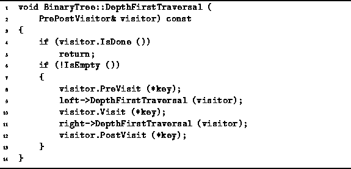

Data Structures and Algorithms
with Object-Oriented Design Patterns in C++
Data Structures and Algorithms
with Object-Oriented Design Patterns in C++
Program  defines the DepthFirstTraversal
member function of the BinaryTree class.
This routine supports all three tree traversal methods--preorder, inorder and postorder.
The implementation follows directly from the definitions
given in Section .
The traversal is implemented using recursion.
I.e., the function calls itself recursively
to visit the subtrees of the given node.
Note that the recursion terminates properly when an empty tree is encountered
since the routine does nothing in that case.
defines the DepthFirstTraversal
member function of the BinaryTree class.
This routine supports all three tree traversal methods--preorder, inorder and postorder.
The implementation follows directly from the definitions
given in Section .
The traversal is implemented using recursion.
I.e., the function calls itself recursively
to visit the subtrees of the given node.
Note that the recursion terminates properly when an empty tree is encountered
since the routine does nothing in that case.

Program: BinaryTree Class DepthFirstTraversal Member Function Definition
The traversal routine takes as its lone argument a reference to a PrePostVisitor. As each node is ``visited'' during the course of the traversal, the PreVisit, Visit and PostVisit member functions of the visitor are applied to the object contained in that node.
 Copyright © 1997 by Bruno R. Preiss, P.Eng. All rights reserved.
Copyright © 1997 by Bruno R. Preiss, P.Eng. All rights reserved.